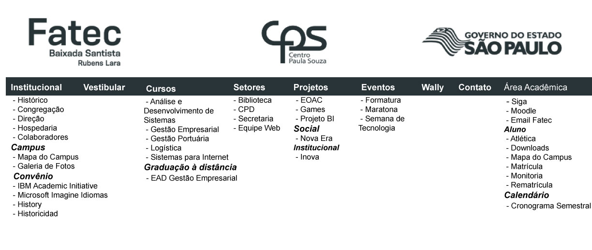
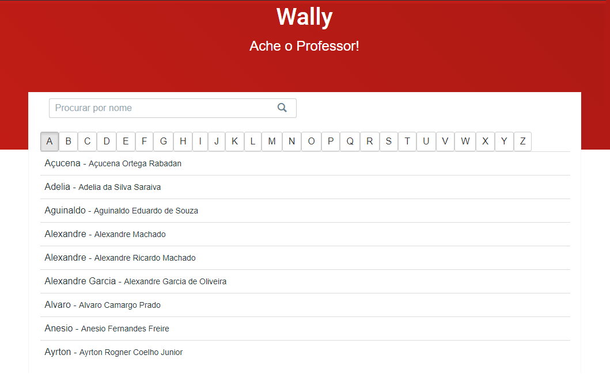
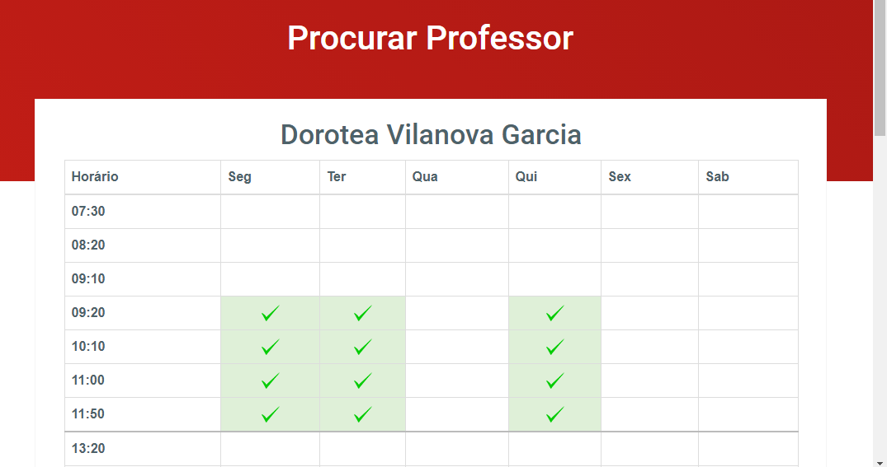

No site encontra-se todas as informações relativas a FATEC Rubens Lara desde informações sobre a instituição como notícias do acontece ao longo do ano. Abaixo segue o mapa de navegação do site.
No link Institucional localiza-se o histórico da faculdade, no qual conta toda a história desde do surgimento até o objetivo dos cursos oferecidos pela instituição.
A Congregação é o órgão de supervisão do ensino, da pesquisa e da extensão de serviços à comunidade da Faculdade, obedecidas às diretrizes gerais da política educacional do Ceeteps
Hospedaria dos imigrantes, a nova Fatec
Empresas colaboradoras com a FATEC
mapa que apresenta toda a estrutura da FATEC e suas localizações.
Encontra-se fotos de toda a estrutura da FATEC.
A IBM criou um programa chamado IBM Academic Initiative com objetivo de oferecer a alunos e professores tanto do ensino médio como do ensino superior a oportunidade de ter acesso a softwares da IBM.
Imagine é um Programa da Microsoft que dá suporte a educação técnica fornecendo acesso a software da Microsoft para fins de aprendizado, ensino e pesquisa.
Apresenta os conteúdos do "Histórico", "Congregação" e "Diretor" em inglês e espanhol.
O Wally é um sistema desenvolvido para auxilio dos alunos da FATEC RL a se informarem dos horários dos professores, facilitando assim a comunicação entre alunos e professores.
Para utilização do Wally o aluno pode fazer a pesquisa por nome ou letra, quando selecionado o professor(a), o aluno é direcionado para uma nova tela onde será informado dos dias e horários em que o ele(a) estará na faculdade.
Essa é a área do Super Eventos cadastrados pelo EquipeWeb, eventos esses contínuos que variam por isso é importante a atualização dos eventos cadastrados.
Os alunos da FATEC RL podem verificar detalhes sobre a cerimônia de formatura de acordo com o semestre e ano de conclusão.
regra de negocios do evento
A Maratona de Programação da FATEC-Rubens Lara é uma competição de programação onde os participantes disputarão para completar corretamente o número máximo de tarefas dentro de um determinado intervalo de tempo. Nessa área o aluno pode fazer download de materiais de auxílio pesquisando pela maratona.
regra de negocios do evento
A semana de Tecnologia tem como objetivo integrar a comunidade acadêmica com profissionais do mercado e empresas de tecnologia, por meio da apresentação e discussão de assuntos ligados ao desenvolvimento tecnológico. Nessa área o aluno pode verificar a programação disponível, fazer sua inscrição e obter o certificado.
regra de negocios do evento
Essa é a área dos Projetos da FATEC RL, os projetos são variados com suas categorias e são cadastrados pelo EquipeWeb, assim oferecendo informações sobre cada projeto ao aluno. Atualmente existe o cadastro dos seguintes projetos.
regra de negocios do evento
Essa é a área dos Setores da FATEC RL, os setores são cadastrados pelo EquipeWeb, assim oferecendo informações sobre cada setor e seus respectivos membros ao aluno. Atualmente existe o cadastro dos seguintes setores.
regra de negocios do evento